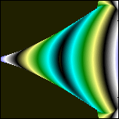

( Anti-Maxwell-Gleichungen,
ein Beginn)
In den Maxwellgleichungen
wird eine Raumladungsdichte definiert, warum keine Zeitladungsdichte ? Weil sie
nicht beobachtet wird ?
Das magnetische Feld gilt als quellenfrei,
darf also ein räumliches Vektorpotential besitzen.
Das elektrische Feld
hat die elektrischen Monopole zu berücksichtigen, die es eigentlich gar nicht
gibt (zweiter Pol ist nur innen drin) - ein Problem, an dem die ganze Maxwell-Theorie
krankt. Es gibt leider nur Dipole und somit auch ein zeitliches Vektorpotential
für das E-Feld. Zeitlich deshalb, weil es keinen Grund gibt, Quellenfreiheit
auf Raumintegrale zu beschränken, diese muß es genauso für Zeitraumintegrale
geben.
Ich fange aber nicht mehr an, an den Maxwellgleichungen
herumzubasteln, wie es Prof. Meyl versucht hat.
Ich beginne
an einer ganz anderen Stelle. Der bekannte Poyntingvektor
taucht als Summand auch in den Maxwellgleichungen auf
(Energiebilanz: E*
dD/dt + H* dB/dt + jE+ div(E
x H) = 0 )
Ich halte ihn nicht für den Schwanz
des Pferdes, das es zu satteln gilt, sondern für den Kopf, aus folgenden
zwei Gründen:
1. Das "Kreuzprodukt an sich"
ist ein Naturgesetz, vielleicht das Einzige. Es hat mit Drehungen, einem räumlichen
Flussgradienten und dazu orthogonalen Kraftwirkungen zu tun. (Flugzeugtragflügel,
Elektromotor, Stromgenerator, Induktionsheizung usw.)
2. Naturgesetze müssen
rekursiv sein, dürfen sich nicht nur auf nichtschwingende Fixpunkt/Einzel-Lösungen
beschränken. Das volle dynamische Spektrum ist in der Natur realisiert. Alle
Gleichgewichte stellen sich auf der Basis eines dynamischen Hintergrundes ein.
Jede Größe ist also deshalb stabil statisch oder schwingend, weil die
dahinterstehende Dynamik dies erlaubt. Daraus folgt die Bedingung:
Alle
beteiligten Größen eines Zusammenhanges müssen einer eigenen Iteration
genügen, die in einer festgelegten natürlichen Reihenfolge ablaufen.
Das betrifft beim Poyntingvektor die drei Größen
Poyntingvektor
P
= c/(4Pi)* E x H mit der Einheit W/m^2=kg/s^3 (1)
Elektrische
Feldstärke E = H
x P mit der Einheit V/m=m*kg/s^3/A (2)
Magnetische
Feldstärke H = P x E mit
der Einheit A/m (3)
Weitere Gesetze, wie die Lorentzkraft F=q*v x B, wurden experimentell
ermittelt, und können Auskunft geben über Verbindungen dieser abstrakten
Felder E, H und P zu Geschwindigkeiten, Drehgeschwindigkeiten
und letztendlich Masse. Sind Kräfte oder Potentiale primär ? Ich denke,
Kräfte tragen mehr Informationen, sie sind "entwickelte" Potentiale,
also sekundär, aber sie wirken sofort auf die Potentiale zurück, siehe
unten. Auf die rückgekoppelte Dynamik kommt es an.
Der
Poyntingvektor P zeigt in die Ausbreitungsrichtung der elektromagnetischen
Energie. Er wird auch Strahlflußdichte genannt. Seine Einheit kg/s^3 gehört
auch zu analogen Größen wie Bestrahlungsstärke, Wärmestromdichte
und Schallintensität. Er ist offensichtlich eine Größe, die "Masse
pro Zeitraum" kg/s^3 angibt, genau wie die bekannte Dichte "Masse pro
Volumen" kg/m^3 . Er hat also ganz offensichtlich genau so viel mit Masse
zu tun, wie die Dichte.
Die Induktionsgleichungen gelten
in Materie:
wegen
c^2 = v^2*(myr*epsr)
c^2=1/(myo*epso)
my=myo*myr, eps=epso*epsr
1 = my*eps*v^2 (4)
gilt
P=-v*k
k=-P*(my*eps*v) Masse/Impuls/Schall-Größe
(5)
P = E x H = -vk (6)
E = H x P = v x (kH) entspricht
E = v x B (7)
H = P x E = (kE) x v entspricht
H = D x v (siehe Meyl) (8)
Dies zur "Angleichung".
Aber
es ist noch hoffnungslos falsch. Wenn man die Gleichungen (1),(2) und (3) im Kreis
iteriert, ohne sinnvolle Materialgrößen zu haben, um (6)-(8) benutzen
zu können, gibt es keine Lösungen. Es divergiert oder geht gegen Null,
wie bei der Folge Z=Z^2. Alle Startwerte innerhalb des Einheitskreises konvergieren
zur Null, der Rest rast nach Unendlich. Diese Rechnung verkörpert ein geschlossenes
System ohne Energieaustausch.
Ersatzweise, um ein offenes
System daraus zu machen, könnte man pro Komponente eine Konstante addieren,
ähnlich wie bei den Mandelbrot- und Julia-Mengen. Diese Rechnung habe ich
bereits vor Jahren gemacht:
innere Schleife pro Bildpunkt:
Px=Pxn: Py=Pyn: Pz=Pzn
Ex=Exn: Ey=Eyn: Ez=Ezn
Hx=Hxn:
Hy=Hyn: Hz=Hzn
Pxn=(Ey*Hz-Ez*Hy)+Cx
Pyn=(Ez*Hx-Ex*Hz)+Cy*my
Pzn=(Ex*Hy-Ey*Hx)+Cz*my
Exn=(Hy*Pz-Hz*Py)+Cx*my
Eyn=(Hz*Px-Hx*Pz)+Cy
Ezn=(Hx*Py-Hy*Px)+Cz*my
Hxn=(Py*Ez-Pz*Ey)+Cx*my
Hyn=(Pz*Ex-Px*Ez)+Cy*my
Hzn=(Px*Ey-Py*Ex)+Cz
Farben aus x, y und z:
x=Pxn: y=Pyn: z=Pzn
Alle
folgenden Bilder sind daraus entstanden:

Siehe auch game204 und game148 in www.fraktal-game.de
weitere
(ältere) Animationen:
http://www.aladin24.de/chaos/images/form100anim.gif
http://www.aladin24.de/chaos/images/poi2anim.gif
http://www.aladin24.de/chaos/images/poi3anim.gif
http://www.aladin24.de/chaos/images/formdetailanim.gif
Bilder
aus game148 und game204:
weitere:
http://www.aladin24.de/frakt3/col/messV.htm
http://www.aladin24.de/frakt3/par/Frucht.jpg
http://www.aladin24.de/frakt3/par/OnLine.jpg
Ausblick:
Denkbar wäre ein prinzipielles Iterieren
in dieser Art, sozusagen als 'Weltgleichung' an jedem Punkt der Raumzeit. So,
wie wir das Apfelmännchen iterieren, und auch andere rekursive Gleichungen
in der Komplexen Ebene (x+iy), so könnte es sein, daß es NUR eine EINZIGE
GLEICHUNG (1)-(3) gibt, aber dafür eine evolutionsfähige Komplexe Ebene,
die in der Wirklichkeit längst 10- oder 26-dimensional sein kann, aufgebaut
aus allen Strukturebenen, wie latente Materie, atomare Materie, Moleküle,
Zellorganellen, Zellen, Organe, Organismen, Planeten, Sonnen, Galaxien, Metagalaxien...
.
schöne Fraktale anderer
Autoren
Eine Diskussion zu dieser Seite
Kritik, andere Diskussion zu dieser
Seite
aktuelles über Fraktale
älteres
Fortsetzung
Inhalt
Meine Email-Adresse: info@aladin24.de